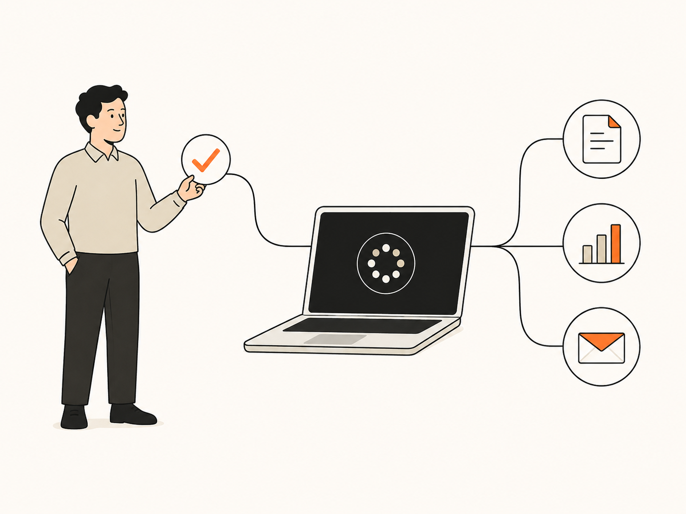
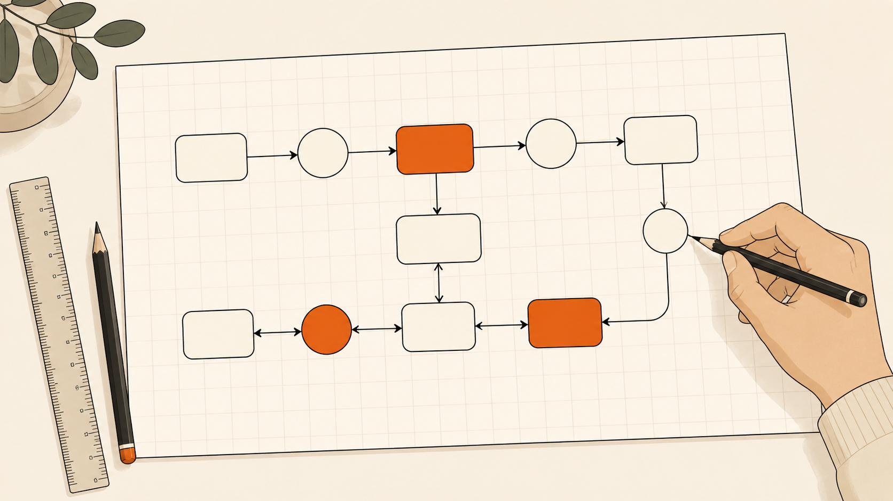

使う人だけが、
使っている。
全社で契約した。説明会もやった。それでも開いているのは、いつもの数人だけ。「便利らしい」で止まっている人が、社内の大半を占めている。

AIを「入れた」会社は増えました。AIで「回っている」会社は、まだほとんどありません。 その差は、こんなところに現れます。
全社で契約した。説明会もやった。それでも開いているのは、いつもの数人だけ。「便利らしい」で止まっている人が、社内の大半を占めている。
プロンプトの工夫も、うまくいったやり方も、ぜんぶ個人のメモとチャットログの中。会社には何も蓄積されない構造のまま、活用「実績」だけが積み上がっていく。
AIに読ませたい情報が、人の頭・メール・共有フォルダの奥に散らばっている。探せない情報は、AIも扱えない。だから毎回、説明からやり直しになる。
社員のやる気の問題でも、ツールの性能の問題でもありません。 だから私たちは、その環境そのものをつくります。
Claude Codeは、資料を作り、データを整理し、定型業務をこなすAIエージェントです。 ただし、契約しただけでは働きません。何を任せるか、どこまで任せるか、品質をどう守るか—— AIが実際に働ける環境を御社の中につくるのが、私たちの仕事です。

どの情報がどこにあり、AIはどこまで読んでよいか。境界線を引くことから始めます。
「ここまでAI、ここからは人」を明文化し、誰が見ても同じ分担で回るようにします。
AIの成果物を、誰が・何を基準に確認してから外に出すか。関所を業務に埋め込みます。
うまくいった型は個人のメモではなく会社の資産へ。使うほど賢くなる仕組みにします。
二つのサービスは、一本の道です。最初の90分から、会社の仕組みになるまで。
AIエージェント初期導入パック
ひとことで言うと：2回のハンズオンでClaude Codeを使えるようにして、御社の業務をひとつ、実際に自動化して納品するサービスです。
AI業務OS構築
ひとことで言うと：どの業務をAIに任せられるかを診断し、会社ぐるみでAIが働く仕組みを設計・伴走するサービスです。初期導入パックで見つかった「AIに任せたい業務」が、そのままAI業務OS構築の出発点になります。
言葉で約束するのではなく、確認できるものでお見せします。
診断レポート、設計書、役割カード、自動化の仕組み。私たちの仕事は、話した時間ではなく手元に残ったもので測ってください。どの段階で止めても、それまでの成果物は御社のものです。
AUTHENTRICの経営は、AIエージェントとリポジトリの上で動いています。戦略も議事録も日々の実行も、です。ご提案するのは理論ではなく、私たちが自社で毎日運用している仕組みの、御社版です。
納品物は御社所有のリポジトリに残し、サポート期間が終われば私たちのアクセス権は消えます。囲い込まず、導入して、手放す。それを前提に設計しています。
いきなり大きな契約は要りません。段階ごとに、進むかどうかを決められます。
業務の流れと情報の在り処を棚卸しし、AIで変えられる業務を見極めます。
AIと人の役割分担と品質の関所を、御社の設計図に起こします。
設計を実際の業務で回し、導入前後の変化を数字で確かめます。
月次のふりかえりと改善で、AIが働く範囲を広げていきます。
【一言を挿入。】
【一言を挿入。】